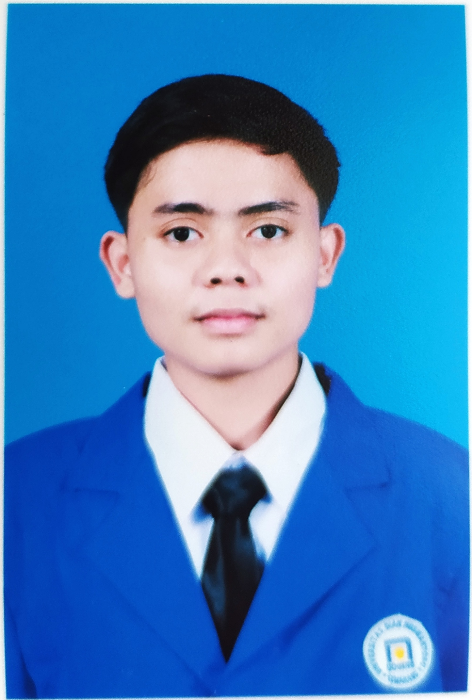
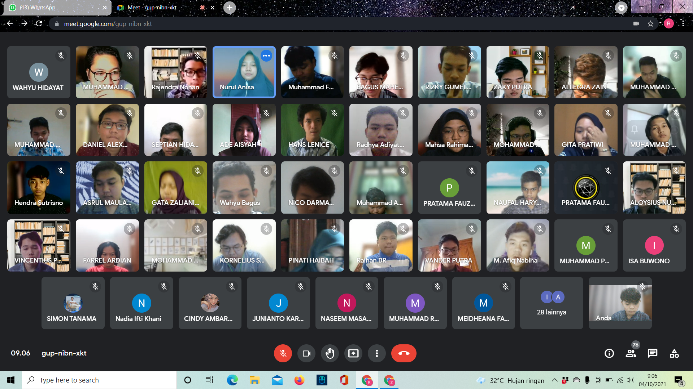

MY WEBSITE

Dinus Student Blog
Pengalaman Saat Kuliah Di UDINUS
Pengalaman Matrikulasi
Pengalaman saya saat matrikulasi sangat menyenangkan awalaupu awal-awal sangat malu karna tidak saling kenal dan seiring berjalannya waktu saya mulai terbiasa.Teman bernama Nasem ,awal kita kenalan adalah waktu kita membuat kelompok
untuk membuat pemrograman bahasa python. Dosen matrikulasi saya adalah Pak Filmada beliau sangat menyenangkan dan selalu membimbing siswa yang tidak.aku dan kelompoku membuat pemrograman ATM sederhana mrnggunakan bahasa python
Daftar Mata Kuliah Semester 1
- Dasar Pemrograman
- Dasar Komputasi
- Kalkulus 1
- Organisasi dan Arsitektur komputer
- Pemrograman berbasis web
- Matematika diskrit
- Pengantar teknologi informasi
Daftar Dosen Pengajar Semester 1
- Nurul Anisa Sri Winarsih S.Kom, M.Cs
- Nurul Anisa Sri Winarsih S.Kom, M.Cs
- Yani Parti Astuti S.Si, M.Kom
- Wildanil Ghozi M.Kom
- Abu Salam M.Kom
- >Dr.Wahyu Aji Eko Prabowo S.SI, M.T
- Filmada Ocky Saputra M.Eng

Copyright @2022 - Rendy Risqi Pradana